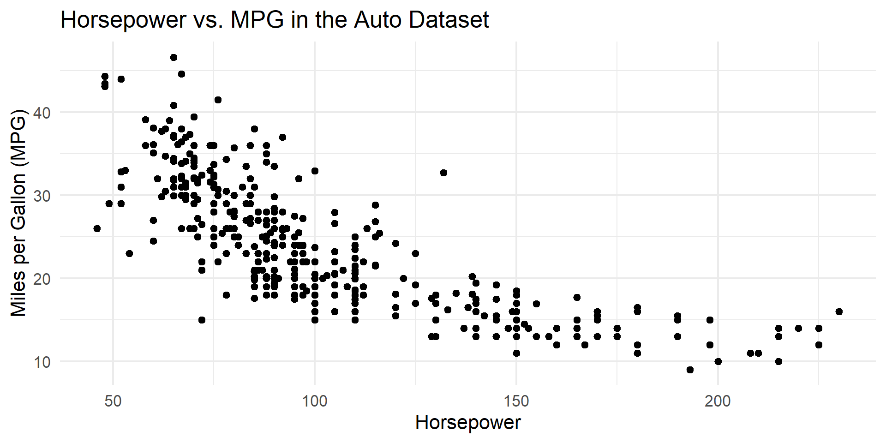
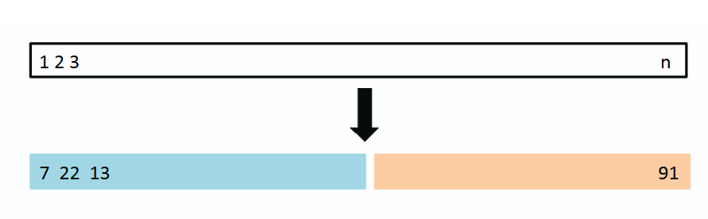
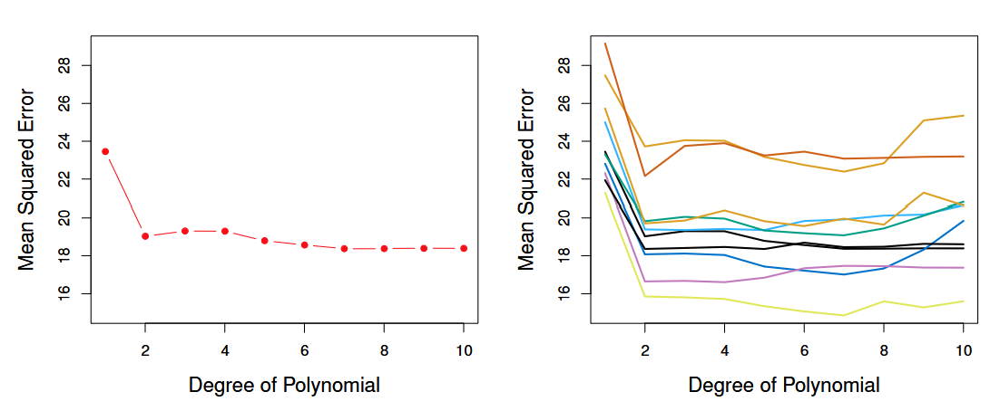
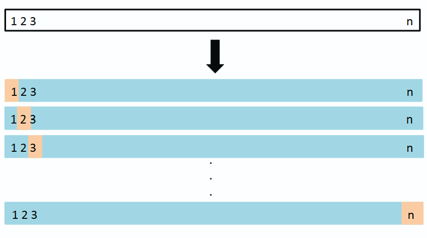
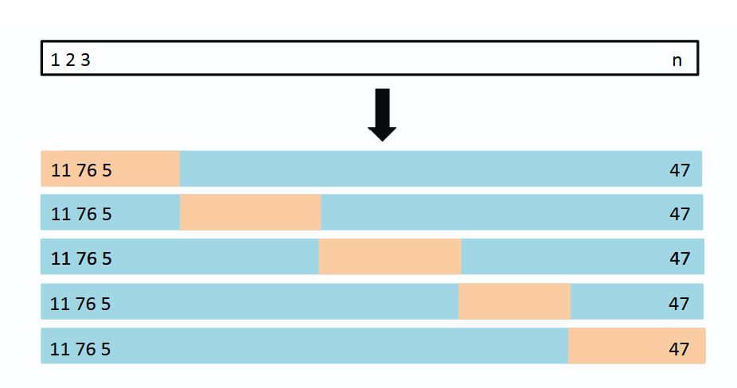
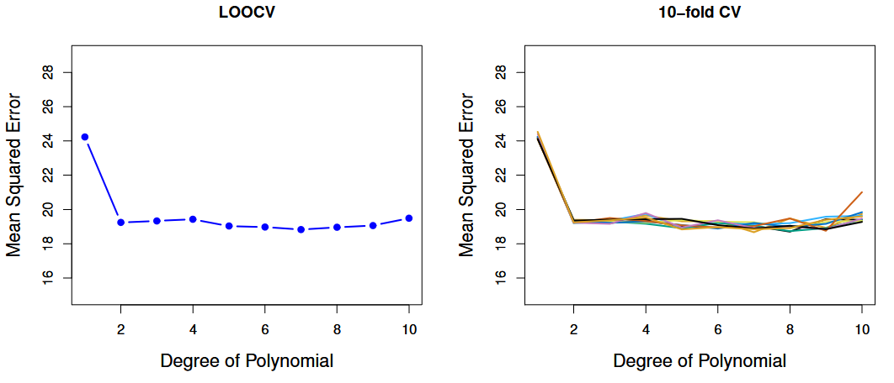
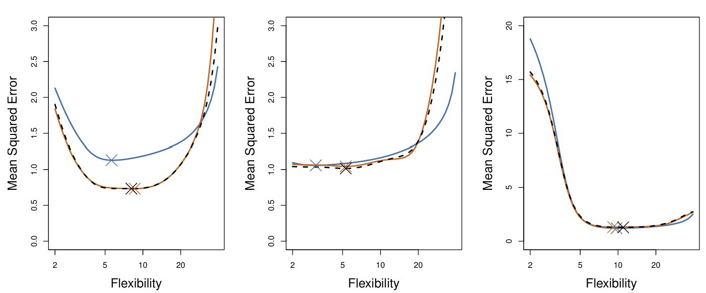
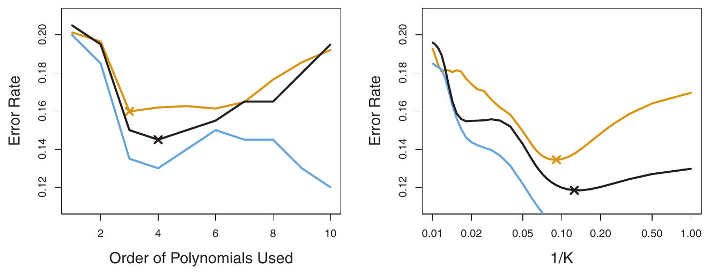

Cross-Validation
ISLR, Chapter 5.1
Shrey Sati and Maggie Huang
October 20, 2026
Section 5.1
The Validation Set Approach
Leave-One-Out Cross-Validation (LOOCV)
k-Fold Cross-Validation (k-fold CV)
Bias-Variance Trade-Off for k-fold Cross-Validation
Cross-Validation on Classification Problems
Today: chapter 5.1, cross-validation methods
Maggie: validation set, LOOCV, k-fold CV
Shrey: bias-variance trade-off for k-fold CV, and CV on classification problems + worksheet
The Problem
From previous chapters, we learned how to fit linear and logistic regression models
We want to know how well each candidate model will generalize to new data
For regression, training MSE, \(MSE_{Training} = \frac{1}{n} \sum_{i=1}^{n} (y_i-\hat{y}_i)^2\) , is an overly optimistic estimate of test MSE
If no test set is available, we can hold out part of our observations as a validation set to estimate test MSE
Recap: we can fit linear and logistic regression, so we often end up with several candidate models
Question: how well will each one predict new data? That is the test error (test MSE for regression)
Ideal: a designated test set. Usually we don’t have one
Why not just use training MSE? The model was fit to those exact observations, so the coefficients were chosen to make training MSE small. It is overly optimistic, and it keeps falling as models get more flexible
Fix: hold out part of our observations from the fitting process (validation / hold-out set), fit on the rest, and compute MSE on the held-out part as an estimate of test MSE
That is the idea behind all the methods today
Example Set-Up
Auto dataset in ISLR2 library: gas mileage, horsepower, and 7 other variables for 392 vehiclesResponse variable : miles per gallon (mpg)Predictor : engine horsepower

Running example from the textbook: Auto dataset, 392 vehicles
For simplicity: mpg is the response, horsepower is the predictor
Point out the curve in the scatterplot: the relationship is not a straight line
Candidate Models
The textbook considers polynomial terms of horsepower up to and including degree 10
Flexibility here = polynomial degree
\(y = \beta_0 + \beta_1 x + \epsilon\) \(y = \beta_0 + \beta_1 x+ \beta_2 x^2 + \epsilon\)
\(\vdots\)
\(y = \beta_0 + \beta_1 x + \beta_2 x^2 + ... + \beta_{10} x^{10} + \epsilon\)
Candidates: linear (degree 1), quadratic (degree 2), and so on up to degree 10
Higher degree = more flexible, wigglier curve
Goal: use held-out data to decide which degree predicts best
Validation Set Approach
Randomly divide the available data once into two parts:
Training set
Validation set (or hold-out set)
Fit the model on the training set, predict the validation set, and compute the validation set MSE
Textbook example: 392 observations split 196 / 196
The split proportion is a choice (e.g. 70/30 or 80/20 are common)

Data is split into training and validation sets. Observations 7, 22, and 13 are in the training set (blue); observation 91 is in the validation set (orange).
Randomly split the data once: training set (fit the model) and validation set (evaluate it)
Textbook example: 50/50 split, 196 and 196
Proportion can vary. 70/30 or 80/20 are common in practice (the book does not discuss this)
Schematic: blue = training, orange = validation. Observations 7, 22, 13 are in training; 91 is in validation
Validation set MSE is our estimate of test MSE
Two major drawbacks, next slide
Disadvantages of the Validation Set Approach
High variability : the estimate depends on which observations land in the training vs. validation setOverestimates test MSE : only part of the data (half) is used to fit the model, and models tend to do worse with fewer observations

Left: validation MSE for one random split. Right: ten different random splits. MPG is modelled with polynomial terms of horsepower, degrees 1 to 10.
Left plot: one random split. One validation MSE per candidate model (degree 1 to 10) forms one curve
Right plot: the same method repeated ten times, each with a different random split. The curves differ noticeably, and they don’t agree on which degree is best
Drawback 1: variability. The estimate depends on which observations ended up where
Drawback 2: we fit on only about half the data, so the validation MSE tends to overestimate test MSE
Takeaway the book draws: all ten curves agree the linear fit is not adequate. That is about all we can say with confidence
Cross-validation addresses both issues
Leave-One-Out Cross-Validation
Divide the dataset into 2 parts:
Validation set has 1 observation: \((x_1, y_1)\)
Training set has \(n-1\) observations: \(\{(x_2, y_2), (x_3, y_3), \dots, (x_n, y_n)\}\)
Compute \(\hat{MSE}_{Test}^{(1)} = (y_1 - \hat{y}_1)^2\)
Repeat \(n\) times so every observation takes a turn in the validation set, giving \(n\) MSEs
CV Estimate : \(CV_{(n)} = \frac{1}{n} \sum_{i=1}^{n} \hat{MSE}_{Test}^{(i)}\)

In each iteration, a different observation is the validation set (orange). The training set is the rest (blue).
Validation set = a single observation; train on the other n-1
Compute the squared error on the held-out point
Repeat so every observation gets one turn as the validation set
Average the n squared errors: this is the LOOCV (CV) estimate of test MSE, equation 5.1
One squared error alone is a poor estimate (based on one point), so averaging all n matters
Compare CV estimates across candidate models
Advantages of LOOCV Over the Validation Set Approach
Much less bias : each fit uses \(n-1\) observations, almost the whole datasetNo randomness in the splits : running LOOCV again on the same data gives the identical result
Advantage 1: far less bias. Training sets have n-1 observations vs. about half for the validation set approach, so we don’t overestimate test MSE as much
Advantage 2: no random splitting. Same data, same result every run
We will see the LOOCV curve a few slides from now (figure 5.4)
Careful wording: “same result every run” is not the same as “low variance.” Shrey will cover how LOOCV’s estimate behaves across datasets in 5.1.4
Disadvantages of LOOCV
Model must be fit \(n\) times
Can be very time consuming if \(n\) is large or each fit is slow
Downside: n model fits
Costly if n is large or the model is slow to fit
Good news for one important case: next slide
A Shortcut for Least Squares
For least squares linear or polynomial regression only , LOOCV costs the same as one model fit:
\[CV_{(n)} = \frac{1}{n} \sum_{i=1}^{n} \left( \frac{y_i - \hat{y}_i}{1-h_i} \right)^2\]
\(\hat{y}_i\) : \(i\) th fitted value from the original least squares fit on all \(n\) observations\(h_i\) : leverage of observation \(i\) , between \(\frac{1}{n}\) and 1. It reflects how much an observation influences its own fitSimple linear regression: \(h_i = \frac{1}{n} + \frac{(x_i - \bar{x})^2}{\sum_{i'=1}^{n} (x_{i'} - \bar{x})^2}\)
Gives exactly the same estimate as \(CV_{(n)} = \frac{1}{n} \sum_{i=1}^{n} \hat{MSE}_{Test}^{(i)}\)
Only for least squares linear or polynomial regression
Fit the model once on all n observations. Take each ordinary residual, divide by (1 - h_i), square, average. We fit the model once on all the data, take each residual, divide it by 1 minus its leverage, square, and average. That matches the LOOCV estimate exactly, at the cost of one fit.
Same result as n separate refits
Note: y-hat means something different here. In equation 5.1 it is the prediction from a model fit without observation i. Here it is the fitted value from the one full fit, which did include observation i
Why divide by 1 - h_i? Ordinary residual is too small because the point helped determine its own fit. High-leverage points get inflated the most
Leverage: Chapter 3, equation 3.37, page 99. The formula on the slide is the simple linear regression version; it is more complicated for multiple regression
Does not work for logistic regression or LDA: those need n refits
K-fold Cross-Validation
Randomly divide the observations into \(k\) “folds” of approximately equal size
Each fold takes a turn as the validation set
The other \(k-1\) folds are the training set
Gives \(k\) MSEs, one per fold
K-fold CV Estimate : \(CV_{(k)} = \frac{1}{k} \sum_{i=1}^{k} \hat{MSE}_{Test}^{(i)}\) LOOCV is the special case \(k = n\)

Schematic of 5-fold CV. Each fold (orange) is the validation set once.
Alternative to LOOCV: randomly split the data into k folds of about equal size
Fold 1 is the validation set, fit on the other k-1 folds, compute MSE on fold 1
Repeat k times so each fold is the validation set once
Average the k MSEs: k-fold CV estimate, equation 5.3
LOOCV is k-fold with k = n
Typical choice: k = 5 or 10. Reason 1 is computational (k fits instead of n). Reason 2 is the bias-variance trade-off, which Shrey covers next
Each fit uses (k-1)n/k observations: 80% for k = 5, 90% for k = 10, vs. about 50% for the validation set approach
Randomness: the assignment of observations to folds is random, so results vary slightly between runs
LOOCV and K-Fold CV Estimates on Auto

Left: LOOCV curve. Right: 10-fold CV run nine times, each with a different random split into ten folds.
Left: LOOCV curve. Run it again and you get exactly the same curve
Right: 10-fold CV, run nine times with different random fold assignments. The curves differ slightly
That variability is much lower than for the validation set approach (compare the right plot of figure 5.2)
Using CV Estimates to Choose a Candidate Model
On real data we never know the true test MSE
With simulated data we do, so we can check how well CV works
Can we trust CV to point us to a good level of flexibility?

Simulated data. True test MSE: blue. LOOCV: black dashed. 10-fold CV: orange. Crosses mark each curve’s minimum.
Setup: these are the same three simulated data sets from Chapter 2, generated from three different true functions (moderately nonlinear, close to linear, far from linear). Not shown here
Because the data is simulated, we can generate fresh data and measure the true test MSE (blue). On real data we can’t
For each data set, smoothing splines of varying flexibility were fit; x-axis = flexibility (higher = wigglier)
Left: CV underestimates the true test MSE
Center: CV is close at low flexibility, overestimates at high flexibility
Right: CV is nearly identical to the true curve
LOOCV and 10-fold look very similar in all three
Key point: when choosing among models we mostly care where the minimum is. Point at the crosses: they land close together in every panel
So: values can be off, but CV is reliable for picking about the right flexibility. “Close to,” not exact
Each panel is one simulated data set, so this is three examples, not a systematic study
If asked why CV is off in some panels: the book doesn’t say
If asked what flexibility means: how wiggly the fitted curve is; details in Chapter 2
Bias-Variance Trade-Off for k-Fold CV
Besides being cheaper, k-fold CV is often more accurate than LOOCV
Question: LOOCV gives the same estimate every run on the same data. Can it still have high variance?
Yes. Variance is about a new dataset . LOOCV’s \(n\) models train on almost the same data, so their errors are highly correlated and don’t cancel out
Obs. per fit
196
314 / 353
391
Bias
High
Intermediate
Lowest
Variance
High
Lower
Tends to be higher
\(k = 5\) or \(10\) balances the two (shown empirically ). Next (6.2): ridge regression makes the same trade-off
Link back to Maggie: she showed k-fold is cheaper than LOOCV (k fits instead of n). The book gives a second, possibly more important reason: k-fold often gives a more accurate estimate of test error
Link back to Chapter 2: a good estimate needs low bias and low variance. Same idea, now applied to the CV estimate of test error
ASK QUESTION
Variance = how much the estimate would change if we collected a brand-new dataset from the same population. It’s not about rerunning on the same data
LOOCV averages n models trained on almost the same data (any two share 390 of 391 points). Their errors rise and fall together, so averaging doesn’t cancel much
k-fold models overlap less, so their errors are less correlated and averaging cancels more
Walk the table top to bottom:
Obs. per fit: each method fits on fewer observations than the full 392
Bias = is the estimate systematically too high? Fewer observations = worse fit = estimate comes out too high. LOOCV has the least bias. If bias were all that mattered, we’d always pick LOOCV
Variance row: but LOOCV tends to have higher variance (what we just discussed)
Verdict: k = 5 or 10 gives up a little bias for less variance
Ridge (next group): bigger λ = less flexible = lower variance, higher bias. Same kind of trade-off
“Does LOOCV always have higher variance?” No. The book says it tends to. The worksheet shows it doesn’t always appear, especially for stable methods like least squares
“Is this the same as Chapter 2’s bias-variance?” Same idea, different object. Chapter 2 is about the model’s predictions.
Cross-Validation for Classification
Same procedure, but count mistakes instead of squared error. LOOCV error rate:
\[CV_{(n)} = \frac{1}{n} \sum_{i=1}^{n} Err_i, \qquad Err_i = I(y_i \neq \hat{y}_i)\]
Example: logistic regression with polynomial terms of the predictors, e.g. degree 2:
\[\log\left(\frac{p}{1-p}\right) = \beta_0 + \beta_1 X_1 + \beta_2 X_1^2 + \beta_3 X_2 + \beta_4 X_2^2\]
So far the response was a number (mpg), so we measured error with MSE
Classification: the response is a category. Same CV procedure, but count mistakes instead of squaring errors
I() is the indicator function: 1 if we get observation i wrong, 0 if right. Average them gives the fraction misclassified
k-fold and validation set versions work the same way
Example: logistic regression from the 4.3 presentation, with squared terms added
Squared terms let the decision boundary curve
“What is log(p / (1 − p))?” The log-odds. p = probability of one class. Logistic regression models the log-odds as a linear function of the predictors
“Why both X1 and X2?” The data has two predictors, the two axes of the next figure
“Why is it quadratic?” Each predictor appears squared. Setting the right side to 0 gives the boundary, and squared terms make it a curve instead of a line
“Subscripts vs superscripts?” Subscript = which predictor. Superscript = power. X1² = first predictor squared
Logistic Regression: Degrees 1 to 4
Degree 1
0.201
Degree 2
0.197
Degree 3
0.160
Degree 4
0.162
Bayes (best possible)
0.133
Simulated data, so we know the true test error
On real data we don’t, so we use CV (next slide)
Simulated data: two predictors, two classes (orange and blue)
Purple dashed line = Bayes decision boundary, the best possible boundary. We only know it because the data is simulated. Even it gets 13.3% wrong, because the classes overlap
Black line = logistic regression boundary at each degree
Degree 1: straight line, misses the curve, ~20% error
Degree 2: barely helps, 19.7%
Degree 3: drops to 16%, closest to the purple line
Degree 4: slightly worse, 16.2%. Extra flexibility starts to hurt
On real data we don’t know these test errors or the Bayes boundary. So how would we choose the degree? Next slide
“Why does degree 4 do worse?” It’s flexible enough to start fitting noise in the training data (overfitting)
“What makes the Bayes boundary the best?” It classifies using the true probabilities, which we only know for simulated data
Using 10-Fold CV to Choose Flexibility

Test error (orange), training error (blue), 10-fold CV error (black). Left: logistic regression. Right: KNN.
Training error keeps falling, so it always picks the most flexible model. CV tracks the U-shaped test error and lands close to the best flexibility
Blue keeps falling, so it can’t choose. Orange (test) is U-shaped
Left: CV picks degree 4, true best is 3. Degrees 3 to 6 are nearly tied, so 4 is fine
Right: KNN, same story. K = NUMBER OF NEIGHBOURS , not folds. More flexible to the right
CLOSING: the next presentation will use CV the same way to choose λ
References
James, G., Witten, D., Hastie, T., and Tibshirani, R. An Introduction to Statistical Learning with Applications in R (ISLR2), 2nd ed. Springer, 2021. Section 5.1.